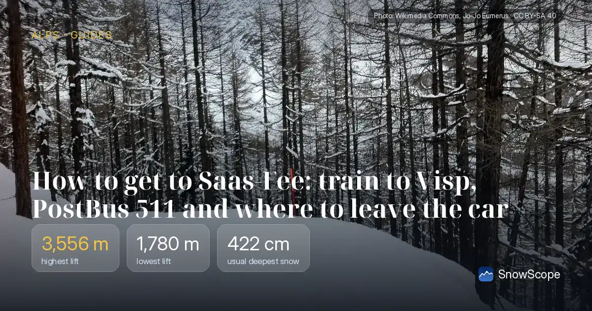
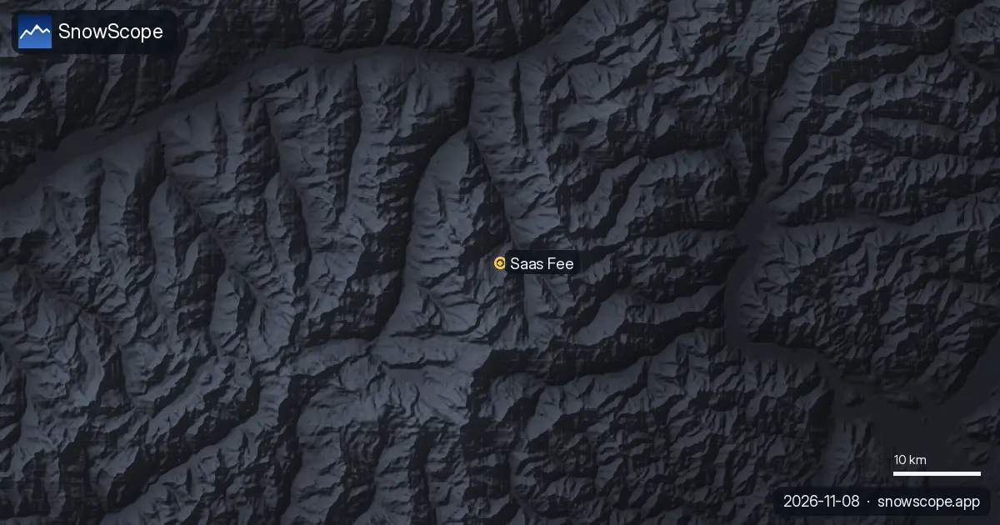

How to get to Saas-Fee: train to Visp, PostBus 511 and where to leave the car
Saas Fee is a car-free resort at 1,780 m surrounded by 13 peaks above 4,000 m, ringed by four mountain passes that shape how you arrive. Whether you come by train and bus or drive your own car, the last stretch is always on foot or by free village shuttle once you reach the valley floor.
See the live snow forecast for Saas Fee in the SnowScope appSnow depth, powder alerts and the 3D map, free.
Train and bus: the fastest route from most airports
From Zurich, Geneva, Basel and Milan airports, trains run down to Visp in the Rhône valley. This journey takes about two and a half hours from Zurich. At Visp station, PostBus line 511 departs every 30 minutes heading south into the Saas valley and up to Saas Fee. The whole journey from a major airport takes roughly three hours.
The Swiss Federal Railway sells reduced-price Supersaver tickets if you book ahead. Once you arrive at Saas Fee bus terminal, the village itself is small enough to walk, and the ski buses up to the lifts are free for all passengers.
Driving in: four passes, one valley road
If you drive, four routes lead to Visp and then south to Saas Fee. From the north via Bern, the Lötschberg car train carries vehicles through the mountain, with trains leaving up to six times an hour in each direction. From the east, the Furka pass offers an open-road route. From the south and Italy, the Simplon pass connects to the Rhône valley. From the west, the valley road runs along the Rhône through Lausanne and down to Visp.
South of Visp, follow signs towards Saas-Almagell. At Killerhof roundabout near Stalden, take the second exit towards Saas Fee. In Saas-Grund, turn right after the church and climb into the Saas valley. The road narrows as it winds upward.

Park at the entrance, then travel free inside
No private cars enter Saas Fee itself. Large car parks sit at the village entrance. The tourist office publishes detailed parking information and updates on any temporary closures due to snow or roadworks. Local news channels also post alerts about access.
Once parked, ride the free local buses and ski shuttles. These include stops at the Alpin Express lift, the bus station, the multi-storey car park and the north car park. During the pre-season (31 October to 18 December 2026), and again from 19 December 2026 to 18 April 2027, e-buses also link nearby villages like Saas-Grund and Saas-Almagell directly to Saas Fee. Other valley buses require payment unless you hold a SaastalCard.
What the numbers show: a long, deep winter
Over 46 past winters, Saas Fee at mid-mountain height (2,668 m) has averaged a season peak of 178 cm, with snow on the ground for about 260 days each winter. The deepest snow usually falls in March. At the base (1,780 m) the figures are lower: a typical peak of 92 cm and 228 snow days, with the most snow often in February.
The highest elevations, around 3,556 m, tell a different story. There the median peak depth reaches 422 cm, and snow often arrives in late September and lingers into early July. This height advantage is why the resort holds snow longest into spring and early summer.
Weather delays: plan your journey time carefully
The Lötschberg, Furka and Simplon passes can close in heavy snow or avalanche risk. If you are driving, leave time for delays and check road status before departure and again before you head back down. The same applies to PostBus 511: winter storms can slow the journey, so allow extra time and have a full fuel tank or charge.
Winter tyre laws apply on all four passes and the approaches. Check your tyre rating and tread depth before you leave, especially if you are renting a car. The valley and village itself are normally accessible, but snow removal is a constant task at this altitude.
Best time to arrive and what to bring
November is early season; snow at the base is still building (past winters show a typical 13 cm by mid-November). Mid-mountain and upper slopes hold more, but conditions can be thin and variable. By December the base usually has 35 cm, and upper slopes 150 cm, making the resort more reliable. January through March offer the deepest and most stable snow.
Whether you travel by train or car, bring warm layers, sun protection and a water bottle. If driving, pack supplies for the day: fuel, water and snacks. The journey is not long, but mountain weather changes fast and you may be delayed.
Tips for skiers
- Taking the train? Buy your ticket through to Saas Fee on the SBB website and board PostBus 511 directly at Visp station without changing platforms.
- Driving the Lötschberg car train in winter? Check waiting times and book a slot in advance on the BLS website to avoid delays.
- Leave your car at the entrance car parks for the entire stay. The free buses inside the village and up to the lifts make a second trip to town unnecessary and save you money on parking.
- Winter tyres are compulsory on all four mountain passes from November to April. If renting, confirm your car has 3PMSF-rated winter tyres on all four wheels or carry chains and snow socks.
- Off-piste and glacier tours: consult the latest SLF avalanche bulletin at slf.ch and always hire a qualified mountain guide.
About these numbers
Resort snow depths are the deepest snow on the resort's upper slopes on the date shown; they are estimates for an area, not a measurement at one point. Forecasts can change. Always read the official avalanche bulletin before going off-piste.
Official avalanche bulletins: WSL-SLF
Cite this report
For research, teaching or the press: the numbers and charts are free to reuse under CC BY 4.0 with this citation.
SnowScope (2026), How to get to Saas-Fee: train to Visp, PostBus 511 and where to leave the car, https://snowscope.app/blog/en/2026/11/how-to-get-to-saas-fee-train-postbus-car-free.html, accessed 2026-11-09
SnowScope (Atlas Labs). (2026, November 9). How to get to Saas-Fee: train to Visp, PostBus 511 and where to leave the car. SnowScope snow reports. https://snowscope.app/blog/en/2026/11/how-to-get-to-saas-fee-train-postbus-car-free.html
BibTeX
@misc{snowscope2026howtogettosaasfeetrainpo,
author = {{SnowScope (Atlas Labs)}},
title = {How to get to Saas-Fee: train to Visp, PostBus 511 and where to leave the car},
year = {2026},
month = nov,
howpublished = {\url{https://snowscope.app/blog/en/2026/11/how-to-get-to-saas-fee-train-postbus-car-free.html}},
note = {Published 2026-11-09 14:31 UTC; accessed 2026-11-09}
}· CC BY 4.0 · Methods, data and tools →
Saas Fee: snow and temperature by height, this winter vs last (tools) →
Follow Saas Fee
Free: a message when fresh snow is coming, and the forecast every morning.
More snow reports

Davos and Klosters share six ski mountains. A day-by-day plan, starting on Parsenn, with what 46 past winters of our snow history say about its heights.

When to book Courchevel and the 3 Vallées, which village to stay in and where the snow lasts, planned from 46 past winters of snow data.

Cortina d'Ampezzo three ways: Tofana, Faloria-Cristallo and Cinque Torri-Lagazuoi, with 46 winters of snow data at three heights.